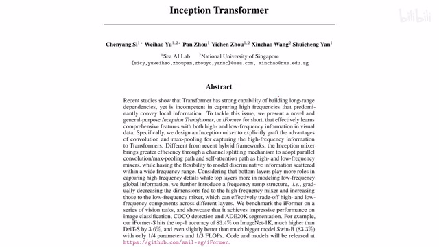
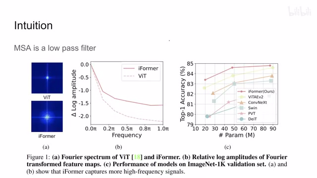
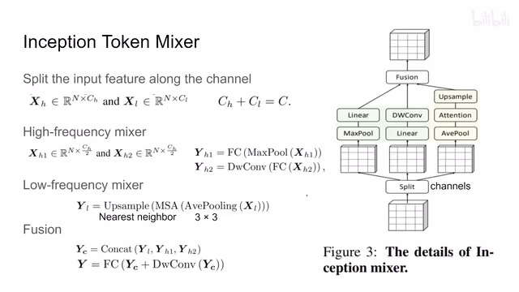
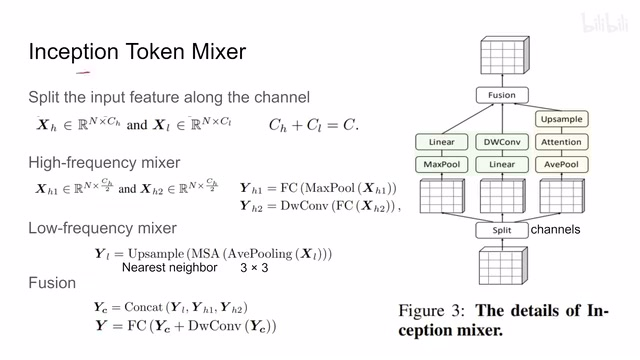
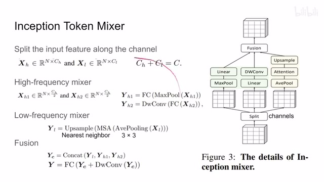
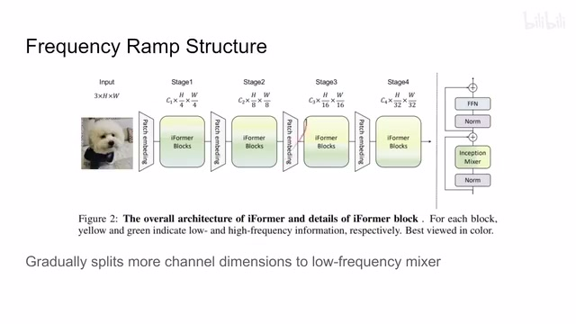
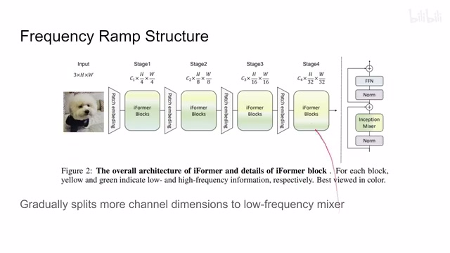
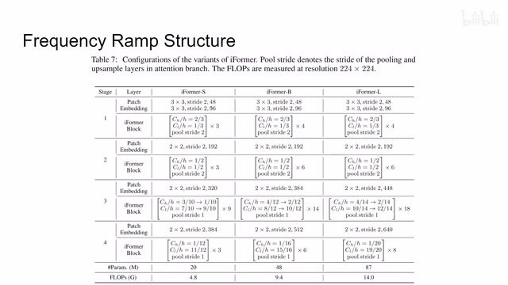
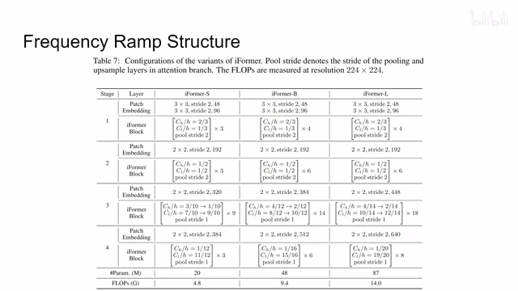

← 返回阅读库 · 原论文目录
论文讲解阅读文档 · 新模型 · v091
iFormer Inception Transformer[2205.12956]
视频时长 00:06:24；讲解文字 3,380 字符；提取讲解画面 12 张。按视频原顺序阅读，每段文字保留时间戳。
文字来自整段视频的自动语音转写，按自然停顿分段，并与 PPT / 论文页面 / 演示画面对齐。未将讲解压缩为摘要；术语、数字和口述公式请结合画面及原论文核对。 阅读稿已校正规范部分明确术语误识别；原始逐字稿和每处修改记录另行保留。
讲解画面为源视频截图（640×360），不是可编辑 PPT 文件。全片按每秒 2 帧扫描内容变化，逐步展开页保留；连续动画保留代表画面。清晰度受源视频限制。
下载完整资料包 · 含离线 HTML、PDF、Word、全部 PPT 画面和字幕。
原论文与材料
Inception Transformer · 下载完整 PDF（17 页）
按时间阅读
00:00:00–00:00:06 · 画面 001

00:00:00–00:00:06 · 画面 001大家好,今天我们来快速使用一篇论文 Inception TransformerInceptionNet 加上 Transformer,非常简单首先一个 Intuition 在我们之前的一篇 How Do Vision Transformers Work 那一篇里面主要是分析了 Transformer 里面的 Multi-Headed Self-Attention 那么其中有一个重要的特性就是相对于 Convolution 来说 Multi-Headed Self-Attention 它是一个低通的 Filter 像这样这边这个傅里叶频谱它只保留了低频的信息
00:00:06–00:00:59 · 画面 002

00:00:06–00:00:59 · 画面 002这是很好理解的因为你想 Attention 的本质不过是一个加权的求和但是这也就意味着 Transformer 它对高频的信号不敏感了那么为了解决这个问题作者用了 Multipath 就是很多个通路的这种设计就像是 InceptionNet 还有 DeepLab 那些东西一样特别是为高频的信号单独开了一个通路这样子就尽量能够保持我们的高频的信息这边你可以看到作者汇报的一个结果还有它的这个频率的响应对吧你对比一下就能知道它这个高频信息得到了保留那么下面我们来看作者具体的实现其实就是这么一张图那整个这个 Inception Mixer 呢就是用来替换这个 Transformer 里面的这个 Multi-Head Self-Attention 那下面我们来看具体的操作吧首先输入的这个 Feature 呢按照这个 Channel 这个地方给它分开一个部分呢走这个高频的 Mixer 一个部分呢走低频的 Mixer
00:00:59–00:02:59 · 画面 003

00:00:59–00:02:59 · 画面 003那对于这个高频的这个 Mixer 来说呢它又进行了一个拆分就是拿到这个 XH 它继续来拆分一半一半也就是你这里看到其实它总共拆出来三份这两份的这个深度是一样的它们两个是这个高频的 Mixer 那这一半一半怎么走呢有一只呢你可以看到它是先过了一个 Max Pooling 然后做了 Fully Connected Layer Max pooling 它就是我们长对图像做的这种 pooling 嘛它用的是一个 3x3 的这个卷积的核去在这个空间尺度上把所有的 token 排列好然后做这个 Max pooling 应该是这样的那过完它之后呢我们再做这个全连接层 Fully connected layer
那这个时候呢应该是按照 token 来处理的就是每一个 token 的这个 vector 来都做这个 fully connected layer 来做这个 projection 是这样子的这个是 high frequency mixer 的第一部分那这个 max pooling 做的是 spatial 空间尺度上的这个大家相互融合嘛这个 fully connected layer 做的就是 channel 各个 channel 之间的大家相互融合嘛那同理呢我们来看到第二个这个 high frequency mixer 它的作用呢你看到输入的图像首先是过一个全连接层
是每个 token 每个 token 这样的处理对吧然后呢在之后呢过了这个 depthwise convolutiondepthwise convolution 就是每个 channel 各自做各自的这个 convolution 啊他的这个 kernel 呢也是 3 乘 3 所以他也是区分开啊我们的每个 channel 相互融合然后呢 spatial-wise 的这个空间尺度上呢在相互融合这样子呢那整个这两个分支啊就是这里这两个分支就是我们的这个 high frequency mixer 他处理的这个内容
然后我们再看 low frequency mixer 它本质上就是我们原始的 multi-head self-attention 没有变但是如果我们直接做的话我们没有计算量上的优势同时我们还因为计算了 high frequency mixer 这个部分所以它的计算量会增大为了弥补 high frequency 这个地方它带来的额外的计算量
00:02:59–00:04:27 · 画面 004
00:02:59–00:04:27 · 画面 004那我们需要在 low frequency 这个地方把计算量给它减下来，那怎么减呢？这里作者用了一个 average pooling，也是这个空间尺度上 average pooling 做完之后呢，我们的这个 token 的数量就减少了，然后呢再做这个标准的 multi-head self-attention，但是做完之后我们 token 的数量还是少的对吧？没法跟我们其他的分支对齐，怎么办呢？再做一个 up sampling 就可以了。这里上采样的策略呢，就是最近邻。
但是使用这样最近邻的这个上采样会给我们带来问题，相当于我们的 token 数量虽然增加了，比如说增加两倍，增加四倍，但是呢它表达的信息它包含的这个信息是没有变的。那为了克服这个问题呢，作者在融合这个地方又做了一个操作，你可以看到首先他把这个low frequency mixer 还有这两个 high frequency mixer 他们的输出都连着这个 channel 串接起来，那整个这个尺寸就恢复到跟我们的输入是一样的一个状态。那在这个基础之上呢，作者这里做了一个 depth wise convolution，那这个 convolution 呢就相当于在 spatial-wise 大家相互融合一下，那这样子呢就消除了我们之前这个上采样最近邻导致的某些 channel 的这个信息的重复。
同时呢还有这个 skip connection 对吧？把它自己加一遍，然后加完之后整个的这一套啊再过一个这个 fully connected layer，最后得到这个 inception mixer 它的这个输出啊，这个呢就是本文核心的这个 inception token mixer 它的这个技术的细节。那再来一遍就是我们输入的图像啊，沿着这个 channel 分成三个部分，两个部分呢分别走 high frequency，然后一个部分呢走原来的一个 low frequency，然后最后呢想办法给它融合起来，这个呢就是像 inception net
00:04:27–00:04:28 · 画面 005
00:04:27–00:04:28 · 画面 00500:04:28–00:04:53 · 画面 006

00:04:28–00:04:53 · 画面 006一样的这么一个机制。那当然你也不用担心这每个分支他们的信息得不到融合，那 Transformer 过完这个 MSA 后面还有 MLP 呢对吧？所以呢这个就是本文的一个核心的贡献。那么下面我们来看整个这个网络的设计啊，还是四个阶段，跟这个 Swin Transformer 这一套的东西都是一样的，你可以看到这里当每一个 block 里面就是把原来这个 MSA 的位置替换成了这个 Inception Mixer，就是我们刚刚介绍的那个 block。那在这个基础上呢，作者还做了一点调整
00:04:53–00:04:54 · 画面 007

00:04:53–00:04:54 · 画面 00700:04:54–00:04:56 · 画面 008
00:04:54–00:04:56 · 画面 00800:04:56–00:05:36 · 画面 009

00:04:56–00:05:36 · 画面 009就是我们在开始分这个 high frequency 和 low frequency 的时候，这个到底有多少个 channel 给 high frequency，多少个 channel 给 low frequency 这个地方其实是值得研究的。那这里呢作者选择的一个策略呢，就是我在相对较低层的时候我尽量可能多的去处理这个 high frequency，我的这个 high frequency 的比较多，那随着这个层数的增加我的 low frequency 呢给的比较多，那当然这也是一个符合直觉的设计。
00:05:36–00:05:40 · 画面 010

00:05:36–00:05:40 · 画面 010我们具体来看它的网络构型，比如说以 small 来说，在第一个 block 的时候 high frequency 占了三分之二，第二个 block 就是一半一半，第三个 block 它逐渐把 high frequency 的数量从十分之三减到十分之一，最后到十二分之一等等，它是这样一个设计。总的来说这个就是把 InceptionNetDeepLab 那些东西、Multipath 这些东西跟 Transformer 的一个结合。
00:05:40–00:06:24 · 画面 011

00:05:40–00:06:24 · 画面 011感兴趣的朋友非常推荐你到原文查看它的各种实验结果，包括它的各种 ablation，当然作者提供了代码的链接，但是实际的代码还没有放出来，据说很快就会放了。好的，那么以上就是我对这一个论文的一个快速的整理，那么感谢您的收看，再见。
00:06:24–00:06:24 · 画面 012

00:06:24–00:06:24 · 画面 012转写与来源说明 · 0 个自动复核提示
保留 16 个原始语音片段，0 个片段触发自动复核提示。提示仅用于定位可能的术语、重复或识别问题，不等于已确认错误。
讲解画面为源视频截图（640×360），不是可编辑 PPT 文件。全片按每秒 2 帧扫描内容变化，逐步展开页保留；连续动画保留代表画面。清晰度受源视频限制。
原视频：paper/合集_2026-10-16_新模型/[论文速览]iFormer Inception Transformer[2205.12956].mp4
SHA-256：90ab847d5da9f0e6a340df6c503257711f4fe631c8912f4335ca1a4d37069cc1
全文按视频语音与画面制作。原论文可从上方链接下载；完整资料包保留全文、原始逐字稿、字幕和校对记录。